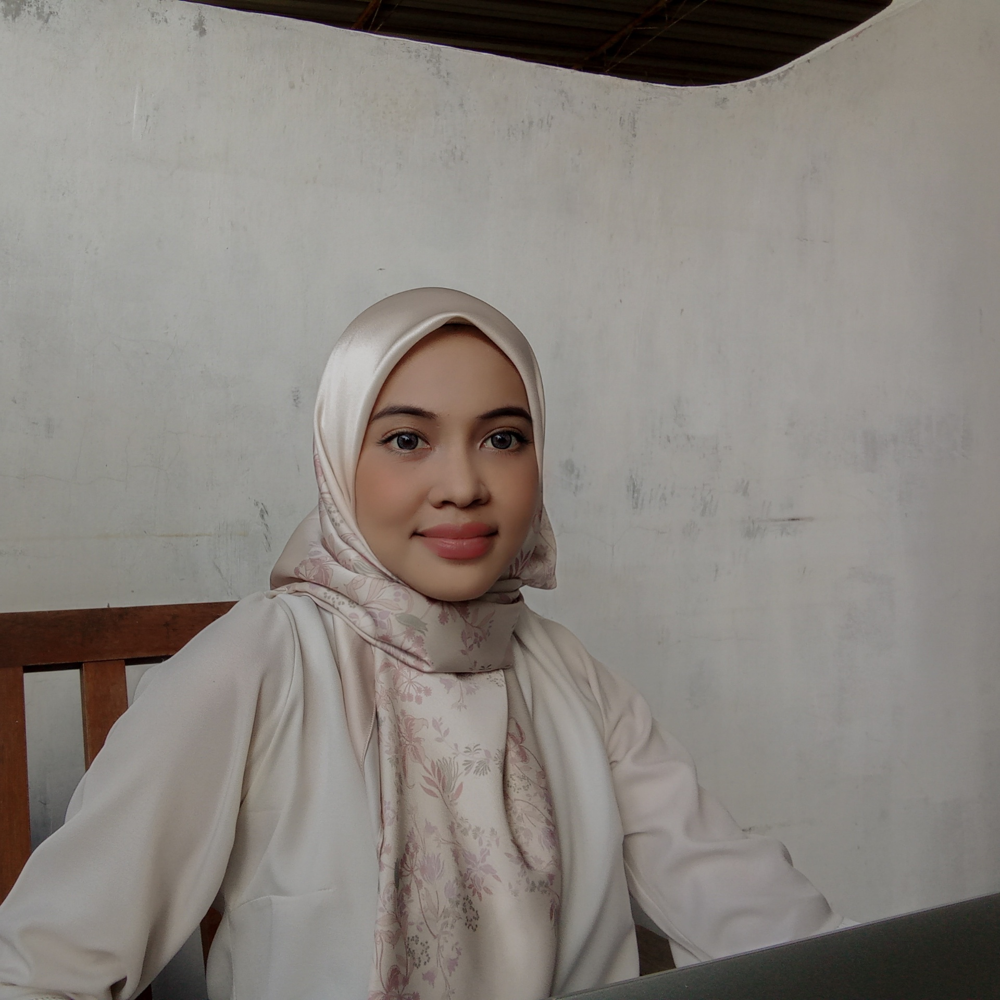

ABOUT ME
Hii my name is Nur Hanis Syairah binti Abdul Halim. I am twenty-two years old and currently based in Sungai Petani Kedah. Now I am student in last semester of Diploma in Information Management at UiTM Kedah. I am the third of five siblings. I have two older sister and one youngest sister and brother. Actually, my dad passed away almost four years ago. Ours is a close-knit family. Each person has different hobbies, and doing different things gives them joy. Cooking is something that gives me comfort and helps me relax. I tried cooking since primary school. At first, it was a little stressful, but then I started learning more and more. Another thing that helps me relax is reading books. I started reading books when I was in school, and over the years, the habit is something that has helped me learn a lot. There are many things I have to learn and want to learn. The first thing that I want to learn is baking. The number of things I can make in the kitchen is limited. However, while making those things, I realize the happiness and satisfaction are get from baking.